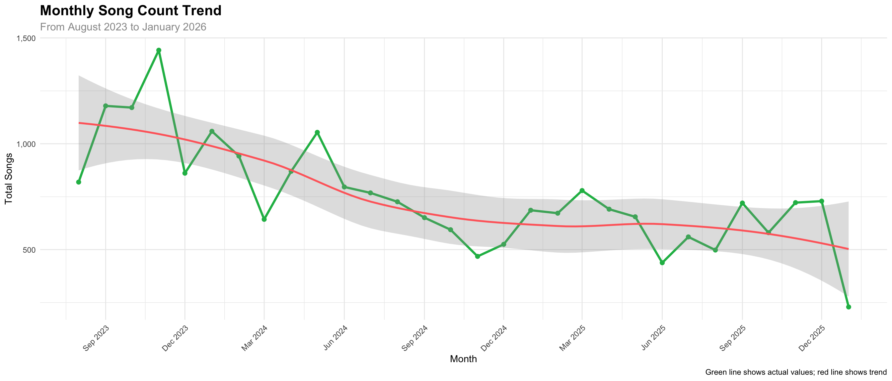
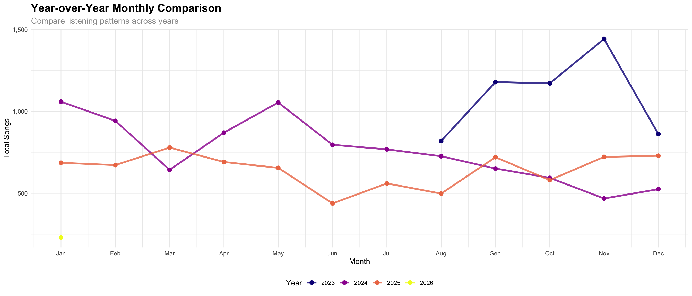
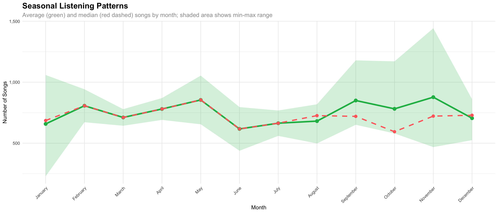

🎵
January 2026
229
📅
December 2025
729
📉
Month-over-Month
-68.6%
📉
Year-over-Year
-66.6%
January 2026
229
December 2025
729
Month-over-Month
-68.6%
Year-over-Year
-66.6%






Last updated on 2026-01-15
---
title: "Monthly Statistics"
description: "Detailed monthly listening patterns and year-over-year comparisons"
---
```{r setup}
#| message: false
#| warning: false
# Load here first (needed to source utils file)
library(here)
# Load standardized utilities
source(here("src", "utils", "utils.R"))
load_common_libraries()
```
```{r load-data}
#| message: false
#| warning: false
# Load daily summary data using standardized function
daily_summary <- load_daily_summary()
# Create monthly summary
monthly_summary <- daily_summary %>%
mutate(
year = year(date),
month = month(date),
month_name = month(date, label = TRUE, abbr = FALSE),
year_month = floor_date(date, "month")
) %>%
group_by(year, month, month_name, year_month) %>%
summarise(
total_songs = sum(songs),
days_listened = n(),
avg_songs_per_day = round(mean(songs), 2),
max_songs_day = max(songs),
min_songs_day = min(songs),
.groups = "drop"
) %>%
arrange(year_month)
# Current and previous month
current_month <- floor_date(Sys.Date(), "month")
previous_month <- current_month %m-% months(1)
```
## Current Month Overview
```{r value-boxes}
# Get current month stats
current_month_stats <- monthly_summary %>%
filter(year_month == current_month)
# Get previous month stats for comparison
previous_month_stats <- monthly_summary %>%
filter(year_month == previous_month)
# Get same month last year stats
same_month_last_year <- monthly_summary %>%
filter(year == year(current_month) - 1, month == month(current_month))
# Calculate values
current_total <- if (nrow(current_month_stats) > 0) current_month_stats$total_songs else 0
previous_total <- if (nrow(previous_month_stats) > 0) previous_month_stats$total_songs else 0
last_year_total <- if (nrow(same_month_last_year) > 0) same_month_last_year$total_songs else NA
# Calculate changes
mom_change <- if (previous_total > 0) round((current_total - previous_total) / previous_total * 100, 1) else NA
yoy_change <- if (!is.na(last_year_total) && last_year_total > 0) round((current_total - last_year_total) / last_year_total * 100, 1) else NA
# Display value boxes
layout_column_wrap(
width = 1/4,
value_box(
title = format(current_month, "%B %Y"),
value = scales::comma(current_total),
showcase = "🎵",
theme = "primary"
),
value_box(
title = format(previous_month, "%B %Y"),
value = scales::comma(previous_total),
showcase = "📅",
theme = "secondary"
),
value_box(
title = "Month-over-Month",
value = if (!is.na(mom_change)) paste0(ifelse(mom_change >= 0, "+", ""), mom_change, "%") else "N/A",
showcase = if (!is.na(mom_change) && mom_change >= 0) "📈" else "📉",
theme = if (!is.na(mom_change) && mom_change >= 0) "success" else "danger"
),
value_box(
title = "Year-over-Year",
value = if (!is.na(yoy_change)) paste0(ifelse(yoy_change >= 0, "+", ""), yoy_change, "%") else "N/A",
showcase = if (!is.na(yoy_change) && yoy_change >= 0) "📈" else "📉",
theme = if (!is.na(yoy_change) && yoy_change >= 0) "success" else "danger"
)
)
```
## Monthly Trend
```{r monthly-trend}
#| fig-width: 14
#| fig-height: 6
monthly_summary %>%
ggplot(aes(x = year_month, y = total_songs)) +
geom_line(color = "#1DB954", linewidth = 1.2) +
geom_point(color = "#1DB954", size = 2) +
geom_smooth(method = "loess", color = "#FF6B6B", linewidth = 1, se = TRUE, alpha = 0.3) +
labs(
title = "Monthly Song Count Trend",
subtitle = paste("From", format(min(monthly_summary$year_month), "%B %Y"),
"to", format(max(monthly_summary$year_month), "%B %Y")),
x = "Month",
y = "Total Songs",
caption = "Green line shows actual values; red line shows trend"
) +
theme_minimal() +
theme(
plot.title = element_text(size = 16, face = "bold"),
plot.subtitle = element_text(size = 12, color = "gray60"),
axis.text.x = element_text(angle = 45, hjust = 1)
) +
scale_x_date(
date_labels = "%b %Y",
date_breaks = "3 months"
) +
scale_y_continuous(labels = scales::comma)
```
## Year-over-Year Comparison
```{r yoy-comparison}
#| fig-width: 14
#| fig-height: 6
# Create year-over-year comparison data
yoy_data <- monthly_summary %>%
mutate(year = factor(year)) %>%
group_by(year, month, month_name) %>%
summarise(total_songs = sum(total_songs), .groups = "drop")
yoy_data %>%
ggplot(aes(x = month, y = total_songs, color = year, group = year)) +
geom_line(linewidth = 1.2, alpha = 0.8) +
geom_point(size = 2.5) +
scale_color_viridis_d(option = "plasma", name = "Year") +
scale_x_continuous(
breaks = 1:12,
labels = month.abb
) +
labs(
title = "Year-over-Year Monthly Comparison",
subtitle = "Compare listening patterns across years",
x = "Month",
y = "Total Songs"
) +
theme_minimal() +
theme(
plot.title = element_text(size = 16, face = "bold"),
plot.subtitle = element_text(size = 12, color = "gray60"),
legend.position = "bottom"
) +
scale_y_continuous(labels = scales::comma)
```
## Monthly Heatmap
```{r monthly-heatmap}
#| fig-width: 14
#| fig-height: 8
# Create heatmap data
heatmap_data <- monthly_summary %>%
mutate(
year = factor(year),
month_name = factor(month_name, levels = month.name)
)
heatmap_data %>%
ggplot(aes(x = month_name, y = year, fill = total_songs)) +
geom_tile(color = "white", linewidth = 0.5) +
geom_text(aes(label = scales::comma(total_songs)), color = "white", size = 3.5, fontface = "bold") +
scale_fill_gradient2(
low = "#2E4057",
mid = "#1DB954",
high = "#FFD700",
midpoint = median(heatmap_data$total_songs),
name = "Songs"
) +
labs(
title = "Monthly Listening Heatmap",
subtitle = "Total songs listened by year and month",
x = "Month",
y = "Year"
) +
theme_minimal() +
theme(
plot.title = element_text(size = 16, face = "bold"),
plot.subtitle = element_text(size = 12, color = "gray60"),
axis.text.x = element_text(angle = 45, hjust = 1),
panel.grid = element_blank()
)
```
## Monthly Performance Ranking
```{r monthly-ranking}
#| fig-width: 14
#| fig-height: 8
# Rank months by total songs
monthly_ranking <- monthly_summary %>%
arrange(desc(total_songs)) %>%
head(15) %>%
mutate(
label = format(year_month, "%b %Y"),
label = factor(label, levels = rev(label))
)
monthly_ranking %>%
ggplot(aes(x = label, y = total_songs, fill = total_songs)) +
geom_col(alpha = 0.9) +
geom_text(aes(label = scales::comma(total_songs)), hjust = -0.1, size = 3.5) +
coord_flip() +
scale_fill_gradient(low = "#4A90E2", high = "#1DB954", guide = "none") +
labs(
title = "Top 15 Months by Total Songs",
subtitle = "Highest listening months in your history",
x = NULL,
y = "Total Songs"
) +
theme_minimal() +
theme(
plot.title = element_text(size = 16, face = "bold"),
plot.subtitle = element_text(size = 12, color = "gray60")
) +
scale_y_continuous(expand = expansion(mult = c(0, 0.15)), labels = scales::comma)
```
## Seasonal Patterns
```{r seasonal-patterns}
#| fig-width: 14
#| fig-height: 6
# Aggregate by month across all years
seasonal_data <- monthly_summary %>%
group_by(month, month_name) %>%
summarise(
avg_songs = mean(total_songs),
median_songs = median(total_songs),
min_songs = min(total_songs),
max_songs = max(total_songs),
n_years = n(),
.groups = "drop"
) %>%
mutate(month_name = factor(month_name, levels = month.name))
seasonal_data %>%
ggplot(aes(x = month_name)) +
geom_ribbon(aes(ymin = min_songs, ymax = max_songs, group = 1), fill = "#1DB954", alpha = 0.2) +
geom_line(aes(y = avg_songs, group = 1), color = "#1DB954", linewidth = 1.5) +
geom_point(aes(y = avg_songs), color = "#1DB954", size = 3) +
geom_line(aes(y = median_songs, group = 1), color = "#FF6B6B", linewidth = 1.2, linetype = "dashed") +
geom_point(aes(y = median_songs), color = "#FF6B6B", size = 2.5) +
labs(
title = "Seasonal Listening Patterns",
subtitle = "Average (green) and median (red dashed) songs by month; shaded area shows min-max range",
x = "Month",
y = "Number of Songs"
) +
theme_minimal() +
theme(
plot.title = element_text(size = 16, face = "bold"),
plot.subtitle = element_text(size = 12, color = "gray60"),
axis.text.x = element_text(angle = 45, hjust = 1)
) +
scale_y_continuous(labels = scales::comma)
```
## Monthly Statistics Table
```{r monthly-table}
#| message: false
monthly_summary %>%
arrange(desc(year_month)) %>%
mutate(
year_month_str = format(year_month, "%Y-%m"),
month_name = as.character(month_name)
) %>%
select(
year_month_str,
total_songs,
days_listened,
avg_songs_per_day,
max_songs_day,
min_songs_day
) %>%
gt() %>%
tab_header(
title = "Monthly Listening Statistics",
subtitle = "Detailed breakdown of listening activity by month"
) %>%
cols_label(
year_month_str = "Month",
total_songs = "Total Songs",
days_listened = "Days Listened",
avg_songs_per_day = "Avg/Day",
max_songs_day = "Peak Day",
min_songs_day = "Low Day"
) %>%
fmt_number(
columns = c(total_songs, max_songs_day, min_songs_day),
decimals = 0
) %>%
fmt_number(
columns = avg_songs_per_day,
decimals = 1
) %>%
data_color(
columns = total_songs,
colors = scales::col_numeric(
palette = c("#FFE5E5", "#1DB954"),
domain = NULL
)
) %>%
opt_interactive(use_search = TRUE, use_filters = TRUE, page_size_default = 12)
```
## Month-over-Month Changes
```{r mom-changes}
#| fig-width: 14
#| fig-height: 6
# Calculate month-over-month percentage changes
mom_data <- monthly_summary %>%
arrange(year_month) %>%
mutate(
prev_total = lag(total_songs),
mom_change = (total_songs - prev_total) / prev_total * 100,
change_direction = ifelse(mom_change >= 0, "Increase", "Decrease")
) %>%
filter(!is.na(mom_change))
mom_data %>%
ggplot(aes(x = year_month, y = mom_change, fill = change_direction)) +
geom_col(alpha = 0.8) +
geom_hline(yintercept = 0, color = "gray50", linewidth = 0.5) +
scale_fill_manual(values = c("Increase" = "#1DB954", "Decrease" = "#FF6B6B"), name = NULL) +
labs(
title = "Month-over-Month Change",
subtitle = "Percentage change compared to previous month",
x = "Month",
y = "Change (%)"
) +
theme_minimal() +
theme(
plot.title = element_text(size = 16, face = "bold"),
plot.subtitle = element_text(size = 12, color = "gray60"),
axis.text.x = element_text(angle = 45, hjust = 1),
legend.position = "bottom"
) +
scale_x_date(date_labels = "%b %Y", date_breaks = "3 months")
```
---
*Last updated on `r Sys.Date()`*